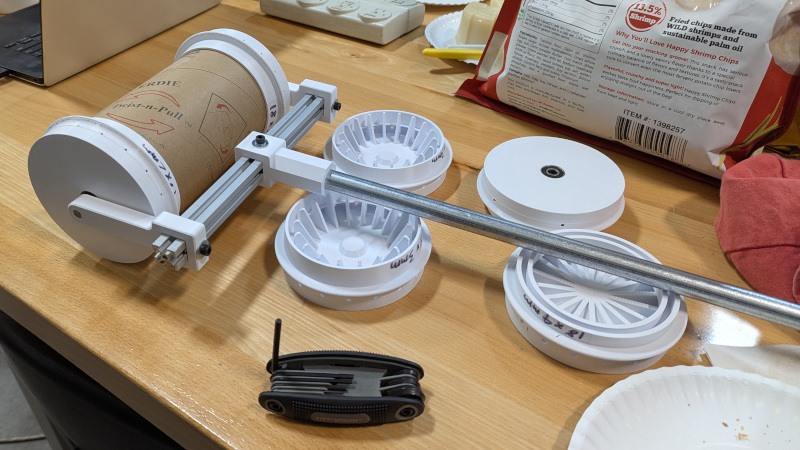
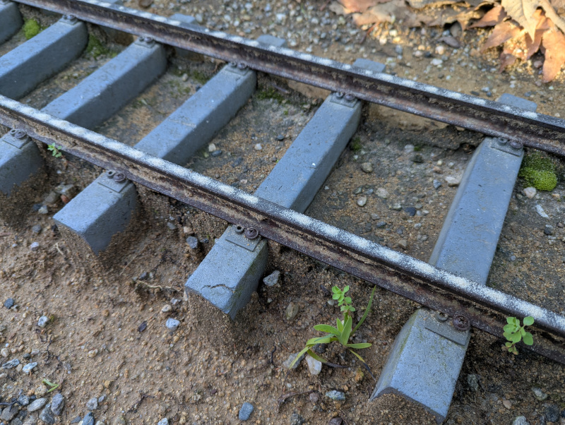

Sand Dispenser Project#
Motivation#
Steel wheels on steel rail means very low friction. Which is great for efficiency once a train is moving, but could be problematic when some extra friction would be helpful, for example climbing up an incline. For this reason trains have a reservoir of sand in a box or a dome. This allows the train crew the option to drop some sand on track, for the wheels to get a little extra grip as needed.
From reading the above Wikipedia link and a few other sources, it feels like sanding the rail is among the last resorts because of secondary consequences. That sand doesn’t just sit obediently on the rail. The wheels can kick them up putting grit in all sorts of mechanical joints and electrical connectors that do not welcome them.
Model railroads share the same concerns as full size trains: trading traction now for possible mechanical or electrical issues later. But if you need it, you need it. However, most model locomotives do not have functional sand dispensers, so we’ll have to sprinkle sand manually.
Goal#
This project is to make a sand dispenser to be used (sparingly as-needed) on 7.5" gauge model railroads. Immediate applications are the rail layouts of Los Angeles Live Steamers and Descanso Gardens thus they will dictate primary design decisions including the following:
- Minimize operator training requirements.
- Built and maintained without specialized tools.
- Durable and reliable operation
Tube Core#
LALS used to have a sand dispenser, which I’ve been told was worn out and got tossed. That’s not a surprise. Sand grittiness work both for and against us simultaneously. But this is why an easily built design was an explicit goal. Erosion will eventually win so we should expect to need replacements periodically.
From verbal description the disposed dispenser was a cylindrical reservoir with caps that the end imitating train wheels, with small holes for sand to escape all around its perimeter. So that’s what I built for my first prototype.
Version 1.0#

The cylindrical reservoir was a cardboard tube used by McMaster-Carr to ship certain items, cut to approximately 7" in length. This tube forms the core of the dispenser.
The rectangular cross-beam is a 20mm x 20mm extrusion beam from Misumi left from the Luggagle PC project
The handle is a length of electrical conduit.
Two commodity 608 bearings help it roll.
Plastic pieces were 3D printed with PLA filament. Click here for CadQuery design file which is parametric for a design easily adjustable within a sensible (to me) range of values. Things like diameter of holes and number of holes.
2026/2/21 Test Run#
I brought it to Descanso Gardens for their garden train maintenance staff to take it on a test drive. The good news is the concept proved very promising right off the bat, which always bodes well. It’s not perfect but the initial prototype wasn’t expected to be.

Observations from the test run:
- Descanso rails get sanded in the morning due to morning condensation on rails. This water gets combined with sand and the resulting mud can plug up holes. A plugged hole leaves a gap in the line of sand. (Pictured above.)
- 2mm hole diameter seems to dispense a good amount of sand, but smaller holes are more prone to clogging.
- 3mm hole diameter is more resistant to clogging but dumps out more sand than necessary, emptying the reservoir faster.
- 18 holes around the perimeter seems to work pretty well. More holes may be interesting to explore but not critical. Fewer holes are not expected to offer any practical advantages.
- I always envisoned pushing the sander ahead of the operator, so I was surprised when one test run was done dragging the device behind. This idea had never occurred to me and was a delightful surprise that seemed to work better. This is why prototypes should be tested by multiple people!
- Dragging it behind seems to help it stay on the rails better than pushing, but either way, it seems to be prone to fall off the rails. Especially when the handle is at an angle relative to rail centerline exerting a sideways push/pull force.
Problems I expected ahead of time, but decided to not worry about it until the basic concept has proven to work:
- Refill is a time-consuming process and need to be easier.
- Holes start dribbling as soon as sand is put in the tube and continues until empty. It would be nice to have some way to keep sand from falling out until we’re ready.
Now that the concept has been proven to work, I need to figure out fixes.
Version 1.1#
After thinking over the results of 1.0 test run, plan for 1.1 are:
- For better stability staying on track, I recieved suggestion that I make the wheel flanges deeper with a sharper (less smooth) transition from horizontal to vertical. This will violate the official IBLS Wheel Standard but maybe doing so is OK in this case.
- To improve refill time, I want to avoid the need to unbolt fasteners and pull the entire wheel cap to refill. I have yet to think of a good way to make wheel removal a fast tool-free experience, so I’ll go with plan B: add a hole to the wheel so we can stick in a funnel inside for filling without taking the wheel off. Obviously this hole will need some kind of door or plug.
- To reduce likelihood of sand turning muddy, raise the holes slightly off the surface and see if that prevents them from soaking up surface moisture. This space will come from a small groove around the wheel. Will this fix the problem or will we just end up with a muddy groove? The next test will tell us!
- Print a ring that snaps into the groove to keep sand inside instead of dribbling. When we’re ready to go, pop ring off groove to release sand.
- Turn a small piece of aluminum down to 2mm diameter end as a hole clearing tool, design and 3D print a holding clip to keep it handy on the dispenser.